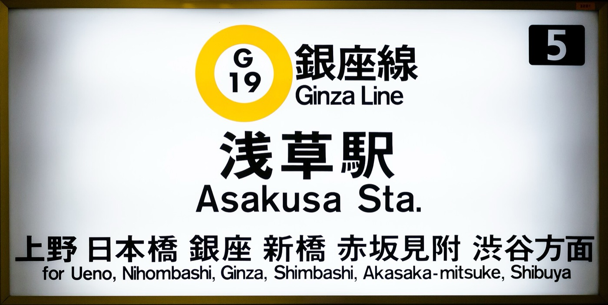
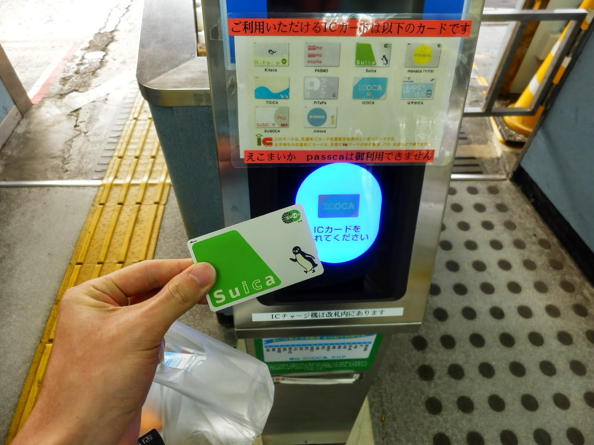
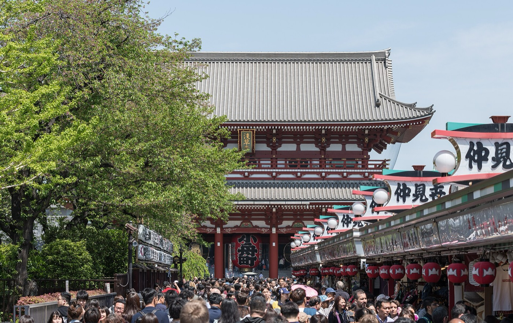
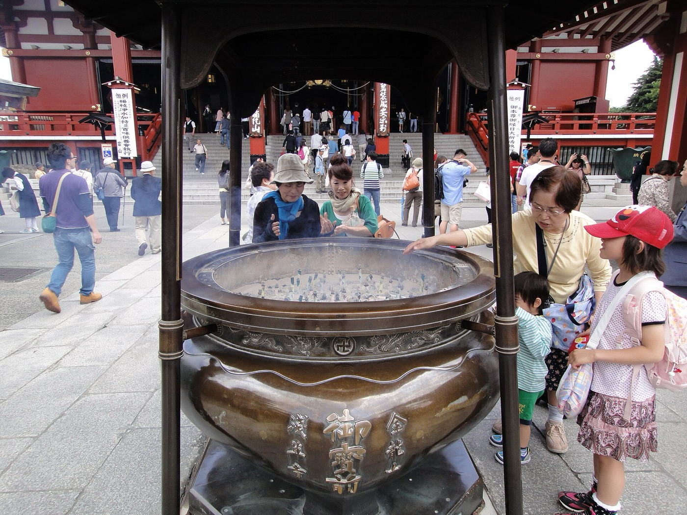
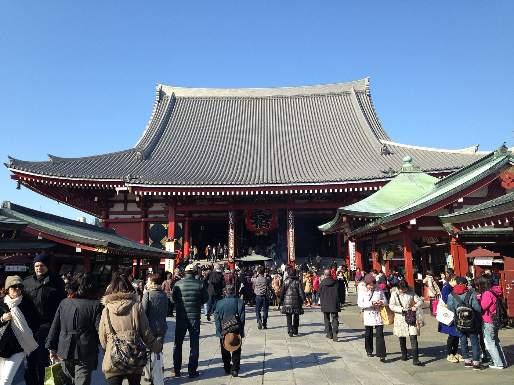
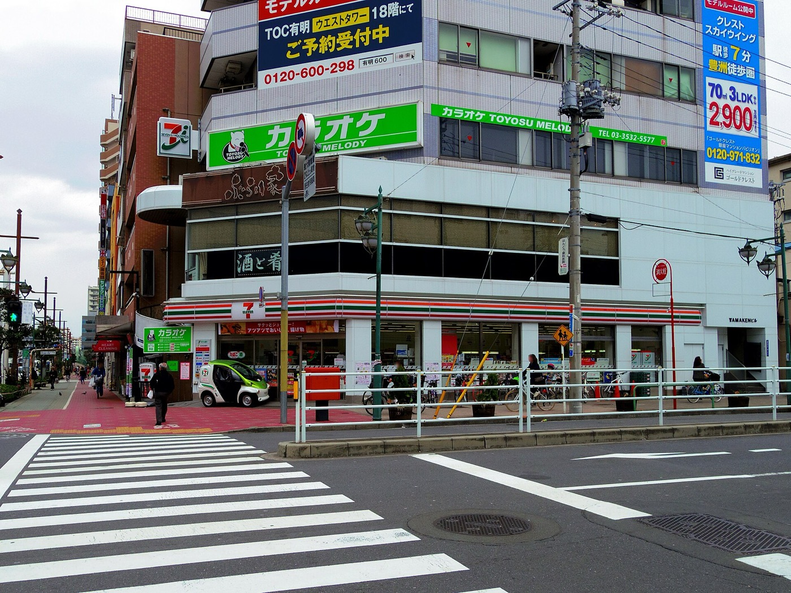
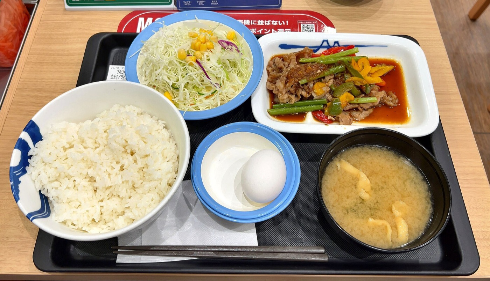

Three hours in Asakusa, 9:30 to about 12:30. We visit four everyday places you will use again this week, and you do each small thing yourselves, so it feels familiar by Monday.
9:30 to 12:30
Senso-ji gets busy after 11, so the temple comes early.
Asakusa Station
Tokyo Metro Ginza Line, Exit 1, near Kaminarimon Gate. Your guide will send the exact spot and a photo the day before.
Warm and ready
A warm coat and comfortable shoes (2–10°C, cold and dry). A small towel or handkerchief. Some cash, including coins for the temple.
Get a card, then ride
We buy and top up an IC card (Suica or PASMO). On the escalator, Tokyo stands on the left. In the line for the train, you wait your turn, and inside the car it is quiet. We ride one stop on the Ginza Line together and come back.
Try it.Top up your own card at the machine and tap through the gate.


Temple first, shrine next door
We walk through Kaminarimon and down Nakamise street, then wash our hands at the water pavilion (chozuya). Fan some incense smoke toward you, toss a coin and bow quietly with your hands together. Senso-ji is a Buddhist temple, so there is no clapping here. At a Shinto shrine you bow twice, clap twice and bow once. Asakusa Shrine is right next door, so you practise both and feel the difference.
Try it.Draw an omikuji fortune. If it is a bad one, tie it on the rack and leave it there.



Pay, carry, move on
Money goes on the small tray at the register. There are almost no bins on the street, so you carry your trash until you find one. In winter there is a shelf of hot drinks, which is useful on a cold morning.
Try it.Buy a hot drink and say “Fukuro wa daijoubu desu” to turn down the bag.

Sit down, order, pay
Your guide picks a small local restaurant, either a ticket machine or a counter place. Two chopstick rules: do not stand them upright in rice, and do not pass food from chopsticks to chopsticks. Call staff with “Sumimasen”, pay at the register on your way out, and do not tip.
Try it.Call the staff yourself and ask for the bill.

You try it, not the guide.
That is the only rule. Every place on this morning is a place you will use again this week.
Words worth knowing
You will use all five before lunch.
- Sumimasen
- Excuse me / sorry
- Arigatou gozaimasu
- Thank you
- Kore kudasai
- This one, please
- Fukuro wa daijoubu desu
- No bag, thanks
- Okaikei onegaishimasu
- The bill, please
What you take home
We finish at about 12:30. The rest of the week is yours, and you have three things to lean on.
- Manners LicenseA printed card with your name on it.
- Cheat sheetOne page on your phone, with everything from this morning.
- Your guide’s tipsSuggestions for the rest of your week.